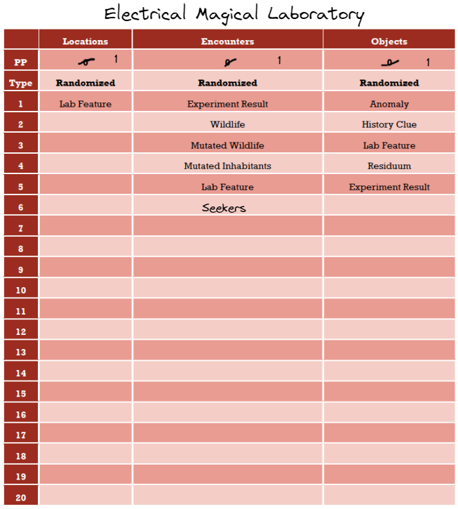
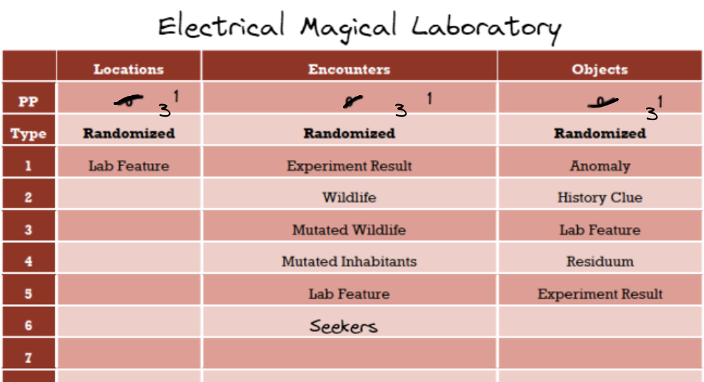

Session 1
Using Fate Check and Tricube Tales.
First Scene:
Scene: You meet with Wolf at the Village, he has a nearby mission for you with another new arrival. Explore the nearby Field for a Residuum object. CF: 5
Who I find with the Wolf? Meaning Tables:
- Name: Ganke
- Appearence: Familiar, Hairy → A big guy, with an ample chest and long dark beard. Not very well kept, dishorderly look.
- Descriptors: Peace, Assist → He prefers to keep himself out of bigger troubles, trying to get by with smaller and better known Wild Magic Fields.
- Char Skills: Guide, Environment → He is a tracker and knows well the surroundings of the Village.
I ask The Wolf for indications regarding the Wild Magic Field and the Residuum needed. Also, the reward.
The Field:
- Curses: Ruin, Intellect → This Field is generally taxing on the mind. Anomalies inside can fry the mind of a victim, turning it into a shambling and violent husk.
- FQ: “Is it in the wilderness?” 12 → Yes, it’s a few hours of travel from the Village.
Residuum needed:
- Magic Item Descr: Senses, Death → A type of Residuum that helps in identifying undeads from a good distance.
- FQ: “Is it a common Residuum?” Likely. 10 → No, it’s uncommon but not too rare. There is a quick need for it due to another expert group dealing with undeads, that’s why they will send novice Seekers to search for them quickly.
Reward: Since it’s a bigger job than usual, it’s going to be around 100 gp for each piece.
To find them in the Field, I need to search for lights in there and disturbing them with something to let them materialize In the Material Plane.
We are ready and go there, we will arrive late afternoon.
Scene 2
CF: 4. Always in control, nothing happened. Expected Scene: We travel in the wilderness, going at normal pace and keeping an eye out. Test: 10. Go as expected. FQ”Is an Emission happening?” 8. No. Counter +1.
I try to know better Ganke, chatting a bit. Character Conversations: Enthusiastic, Inform. → After a bit of small talk, he starts to open up, revealing a chatty person behind the initial stiffness. He starts to talk about his past and how he became a Seeker a couple months ago. He has a bit of training with the bow, he was a hunter, so travelling the wilderness is his specialty. He now knows most of the immediate sorroudings of the Village, while providing for his family, a few days from the border of the Cursed Kingdom.
We arrive at the Field late afternoon under the never changing cloudy weather.
Scene 3
CF: 3. In control. Expected Scene: We explore the Field searching for Residuum until night comes, then we camp for the night.
How are the Field surroundings? We know it’s outdoor wilderness, and shatters the mind. FQ: “Is it a swampy area?” 50/50. 5, 5 → 8. No. No Random Event. FQ: “is it a forested area?” Likely. 10, 10 → 19. Excep Yes. It’s a very old forest, with a long history. Forest Descriptors: Lake, Assist → The forest revolevs around a lake, surrounded by the forest. Ganke says that the lake has been lost for years due to the Field. Getting lost inside here is easy due to the mind attacks, so most stay in sight view of the forest border, or use some ropes to be dragged out by companions. We will approach it in the former way.
We will explore it for as long as possible. To the default Wild Magic Field, I added Contorted Tree, Ruin, Cave and Lake to the Locations list. The rest is default. Mind Shatter Field.
Before entering, I prepare myself mentally, casting a ritualistic spell to fortify our minds. I spend 1 karma for it. All mental attacks will be 1 step easier for a few hours. Start of exploration, I will use the Concluding, Short table: Area 1: Location: 3 → None or Expected. Encounters: 3 → None or Expected. None. Objects: 9 → Random. Object Descriptors table: Harmful, Majestic. Dungeon Traps table: Could, Projectile. Interpretation: Once entered the tree line, nothing looks too unfamiliar from any other forest. After a few steps, whispers start to be heard. Initially very faint, when entering more in the forest, they become more and more intelligible. While walking, we get near a mutated plant that is ready to shoot a cloud of irritant spores as self defense. First, mind attack challenge. It’s a easy challenge for now, difficulty 4. Due to my magic, it’s difficulty 3. It’s a crafty challenge, so I roll 2d6. 3, 2. Success. Normal crafty challenge to see the trap, difficulty 5. Roll: 5, 4. Success. Yuhdel sees the plant and Ganke recognizes it, keeping its distance to avoid triggering it. The exploration continues.
Session 2
The exploration continues.
Area 2: Location: 3 → None or Expected. → Expected. lots of trees. Encounters: 6 → Expected. → Some small mutated wildlife, nothing aggressive. Objects: 2 → None or Expected. → Expected, trees?
Interpretation: After the encounter with the dangerous plant, the due continues searching for signs of Residuum. Ganke continues to throw small pebbles in front of him. “Always look out for anomalies here. If you see some visual distortions, throw a pebble at it. If you don’t see it, throw a pebble at it anyway and thank me later. If it has eyes and watches you, throw a bigger pebble, maybe with a stick attached to it and using a bow” he smirks. In the meantime some small two-headed rodents with a sickly look and missing fur run away from us.
Area 3: Location: 9 → Random. → Locations table: Portal, Intriguing. Encounters: 4 → None or Expected. Objects: 5 → None or Expected.
Well, Intriguing Portal. That’s intriguing. I’m picturing some physical entrance to somewhere, not a magic portal, which would be a too powerful magic to remain stable here. Looks like a Scene change to me as well.
Scene Bookkeeping: No Thread changes, no Characters changes for now.
Scene 4
CF: 4. We were in control, but this ending throw it all out the window. Expected Scene: We explore this entrance and try to explore it if needed. Test: 4. Interrupt! Event Focus: 52, Move Towards a Thread. Roll on Thread list: 1. Reach nearby Field and explore it, which I will rename to “Explore the Mind Shatter Field” since I already reached it. Mmm not sure, it doesn’t feel like an interrupt since I’m already moving towards that thread. I’ll reroll the random event. Event Focus: 21. NPC Action. Roll 10, empty, so I choose. I reroll since I’m undecided, 8. Ganke. Character Actions, General table: Oppose, Helpful. Nothing good… Since the Interrupt didn’t change much of the location, I’ll keep the Portal idea.
Interpretation: While walking in the forest and continuing to chat with Ganke to keep the voices out, we come across a circular entrance in the side of a hill.
FQ: “Is it a Ruined Magical Laboratory?” (from the CK setting) Likely. 9, 3. 12 total. Yes. FQ: “Is it already unsealed?” Likely, we are near the Village, so plenty of people have tried. 7, 6. 13 total. Yes.
After seeing this, Ganke stops responding and stops launching pebbles. Without saying a word, he goes straight inside the entrance, eyes fixated in front of him, which has the heavy metal door slightly open to allow a person to pass through. “Ganke! What the hell are you doing? Ganke!” I try to whisper as high as possible, the creepiness of the silent forest intimidating.
Session 3
Since I will follow Ganke inside, I will generate a new Scene for each location. First though, let’s generate this unsealed Magical Laboratory. I expect for the original research focus of this to maybe still be there, but I expect to find other wildlife too. Since this laboratory is inside a forest and inside a Field, I will roll on the Curses (effects of the Field on the Laboratory), Powers (for the original research focus) and Locations tables (for the inside description), maybe something will come out.
Curses: Neglect, Harm. Locations: Fortunate, Charming. Powers: Electricity, Emission
Interpretation: This laboratory was focused on researching the magical links between magic and electricity. The complex itself will be good looking and still in good shape, with some sections still in good working order. The Curse has probably un-stabilized anything magical inside, which could cause harm. Also, the effects of the Mind Shatter Field are not felt inside for some reason (!).
Also, since this is the end of the Scene, bookkeeping. I will add “Get out with Ganke from the lab” to the Threads list. Also the lab will be added to the Characters list. I expect a short detour, so no new list for this place, yet.
Scene 5
CF: 5. Lost control, so we increase. Expected Scene: I enter the laboratory stealthly to avoid attracting undue attention, searching for Ganke. Test: 3. Altered! Let’s roll on the Scene Adjustment table to be surprised. 10. Roll 2 adjustments! 6, 2. Add an Object, Add a Character. Let’s roll on the Object table: Meaningful, New. So this could be an important object recently arrived here. Something meaningful to Ganke probably has been dropped. The most probable Character here is Ganke itself, but I would say that another Seeker is here instead, from the Seekers entry.
Ok, now for the laboratory itself. I will use the standard EC table as is, only adding Seekers to the Encounters table, since it seems that there are more of them. It’s going to be a Concluding, Short location. Here is the table: 
Area 1: Locations: 2: None or Expected. Expected. → An old entrance hall with traces of leaves and dirt coming from outside, brought by animals. Encounters: 7: Expected. → The Seeker(s) with the meaningful object. Objects: 1: None or Expected. The meaningful object.
FQ: “Are there 2 or less Seekers?” Likely. 6, 4. 11 total. Yes. 2 Seekers are there. Characters table: Calm, Thieving.
When entering inside the structure, I see this old entrance hall, no windows but still illuminated by the door opening. It’s now quite dirty from contaminations from the outside forest. After entering inside, the whispers suddenly stop and I feel the physic pressure disappearing. The hall is basically empty, with some old broken furniture all over the place. Among those, 2 Seekers are relaxing while looking at some objects in a sack. They are discussing the value of a necklace, which I recognize as the one Ganke was wearing, a family heirloom he told to me before.
I try to approach stealthily to hear what they say. Agile challenge 5. I roll 2d6. 3, 2. Fail.
While walking, I step on dry foliage, alerting the 2 Seekers.
Character Action, General table: Combative, Creepy. Ugh. Appearance table: Interesting, Messy.
Upon getting closer, the two human Seekers are evidently drunk or mentally affected by something. They approach me without prudence, unsheathing off some rusty swords.
FQ: “Are they mind controlled?” 50/50. 6, 9. 15 total. Yes. That’s interesting. FQ: “Do they attack immediately?” 50/50. 9, 7. 16 total. Yes.
Fight! Each of them is a difficulty 5 foe since they are rank 1 like me. Effort equals to rank, so 1. Seeker 1 is brawny and stupid. Seeker 2 is agile and stupid. Stupid due to the mind control.
I unsheathe my sword and ready my shield. I wait for the first to attack. Brawny defence roll, so 3d6. 5, 6, 2. Exceptional success thanks to the 2 successes.
I manage to defend easily from both attacks, even pushing S2 away with a kick.
My turn, I try to follow on the unbalanced foe, trying to disarm him. Brawny attack, 3d6. 6, 4, 1. Success.
With a quick hand movement, the sword flies away.
S1 tries again. Brawny defence roll. 3, 4, 2. Fail. 1 damage to resolve, 2 remain.
Profiting from my distraction, he manages to kick me on the side. I fall on the ground.
I try to quickly recomposing and standing up. Agile standard challenge. 5, 1. Success.
I manage to roll using the same momentum and return standing up, ready again. In the meantime, S2 is going for his sword. S1 continues attacking.
S1 attack. Brawny defence. 4, 4, 1. I expend a karma to lower the difficulty to 4, so it’s an exceptional success. Still 1 karma left.
I manage to parry his blow, grab his extended arm and hit the face with my pommel of the sword. S1 goes down unconscious. In the meantime, S2 his near his sword
I plunge to him, trying to kick away the sword before he reaches. Agile standard challenge. 2, 2. Fail.
He reaches for the sword while I kick it away.
S2 attacks me while still on the ground. Brawny easy defence. 5, 2, 2. Success.
I parry with my sword at the clumsy attack, S2 is still on the ground.
I attack him again. Brawny easy challenge, due to him being on the ground. 6, 4, 1. Excep Success.
Immediately after parrying I punch him in the face with the side of the shield, putting him unconscious.
After this, I quickly grab my rope and tie them apart from each other and stand guard waiting for them to awake. I retake Ganke’s heirloom.
End of Scene. I regain my resolve and karma back since it’s the end of the session.
Bookkeeping: I add “Hypnotised Seekers” to the Character list.
Session 4
Scene 6
CF: 6. Not totally in control, not without either, but I want some more chaos, so I lean on increasing. Expected Scene: Yuhdel interrogates the two, if possible. Test: 8. Expected Scene.
Yuhdel wait for the Seekers to wake up. After a few minutes, both start to regain consciousness.
FQ: “Are they still hypnotized?” 50/50. 9. No. Character Conversations: Odd, Careful.
Yuhdel starts asking some general questions, who they are, why did they attack him, what did they do inside this old laboratory.
Crafty challenge to get them to talk, difficulty 5. 5, 6. Critical success.
They initily are quite strange, as if hangover from alcohol. After a few attempts at some calming conversations they start to open up quickly.
Motivations: Intellect, Mistrust.
They say that they entered the lab after following the advice of a fellow Seeker, which remained outside the Mind Shatter Field. After that, they don’t remember much.
FQ: “Did they remember seeing Ganke?” Likely. 11. Yes. They remember Ganke walking inside the lab, leaving some objects on the ground while walking deeper in the lab. They remember seeing him as someone to leave alone, but then they had the urge to check the heirloom for a reason they don’t remember.
After being sure that they are really in themselves, Yuhdel frees them and gives them back their weapons, pointing them towards the closest border and the directions for the Village.
End of Scene. Bookkeping: Removed Hypnotized Seekers from list.
Scene 7
CF: 5. Largely in control. Expected Scene: Going deeper in the lab exploration. Test: 8. Expected.
Area 2 Location: 4. None or Expected. Encounters: Random. Descriptions: Intensely, Ruined. Objects: None or Expected.
Not sure about the encounter. Let’s roll on Character skills: Lethal, Water. Still quite nebulous. What is it doing? Actions: Escape, Agreement. Interpretation: The rooms of the former facility are quite in bad shape from water damage it seems, but in the first room most of it is dry, even if heavy with mould. The next room is instead slightly lower than the previous, resulting in a small fly of stairs entering in what seemed like a storage room, full of wooden and metal crates. There is some ankle deep water, coming from a ruptured tube. Some corpses are there, face down and slightly moved by the running water. An incline goes off from the other side, going back up into the lab.
Does Yuhdel notice the electrified water? A crafty challenge, difficulty 5. 5, 5. Crit success. *He notices the marks of electric death on the corpses and identifies a switch near the tube, maybe it’s a valve? He tries to jump on the wooden crates to reach the valve. *
Agile challenge, diff 4. 1, 2. Fail.
While jumping on the wooden boxes, the time in water hasn’t helped at all the old wood. After a couple of good boxes, one breaks under his feets, uncovering what’s inside.
FQ: “Is inside a dangerous object?” Unlikely. 5, 3. 7. No. Objects meaning table: Information, Empty.
The crate is actually empty and half full of water from cracks on the side. Yuhdel continues with the boxes.
Agile challenge, diff 4. 5, 3. Success.
Yudel reaches the other side without more issues, going up again on the stone incline to the next location.
Area 3 Location PP 2: 5. None or Expected. Encounters PP2: 9. Random. Characters table: Unexpected, Animal. Objects PP 2: 7. Expected.
Let’s generate this animal. Creature Descriptors: Rooted, Tree-like. Creature Abilities: Pursue, Environment. Animal Actions: Oppose, Friendship. Ops…
FQ: “Is Ganke here?” 50/50. 11. Yes.
Intepretation: Yuhdel arrives in a big room. This has been flooded as well, but the water doesn’t seem electrified. A lot of plant life seems to have grown here, creating a swamp-like environment, with big trees dominating the almost unrecognizable room, lit by a blue crystal attached to the ceiling, providing a good quantity of light and electrical energy. Almost immediately, he notices that the bigger trees are moving, as if some of the lower branches acted like arms. They seem rooted in place though. After a moment, he sees Ganke there.
FQ: “Is he back in control of his body?” 50/50. 2, 3. 5. No.
Ganke is unconscious and against a bigger tree in the center, which seems to be slowly engolfing him in a web of roots. Some other trees near Yuhdel instead try to throw some lab debris at him.
Time for action!
Brawny defense roll, 3d6. Diff 5. 5, 5, 1. Crit success.
*The flying debris passeswhere a moment before was Yuhdel’s head. He ducks down and searches for something to damage the trees. His sword will not help in woodcutting…
FQ: “Is there something useful against the moving trees?” Likely, due to them being born in the same place. 8, 5. 14. Yes.
Objects table: Stolen, Complicated. Let’s do another couple. Cold, Soft.
*Looking around in the room, some of the old machinery is still visible among the growth. Some glass containers seem to be filled with a snow-looking substance, which is at the center of a spot in the wall clean of vegetation, as if inhibited by it. Yuhdel hopes for the best, trying to get some of the substance on the trees. *
FQ: “Is the container open?” 50/50. 3, 3. 6. No with random event! 13. New NPC!
Char Appearance: Feminine, Tools. Descriptors: Bleak, Macabre. Skills: Intellect, Change Character Actions, Combat: Rude, Swift.
Oh my… off to an interesting start. When Yuhdel starts to touch the container, a feminine voice is heard: “I would not touch that if I were you! DUCK!” And almost immediately, a sound of infringing glass is heard, followed by an explosion.
Agile challenge, diff 6 for the surprise. 2d6. 1, 6. Success.
Yuhdel manages to take cover behind a crate, avoiding the blast. Immediately firing trees are eveywhere, the unknown helper is hacking away at the roots surrounding Ganke. After this sudden explosion, Yuhdel has the occasion of seeing the new arrival. A young lizardfolk woman with pale green scales, wearing some traveler’s clothes and a number of bags on herself. A belt full of small glass vials, with multicolored substances is going diagonally on her chest. A good portion of her face and neck is missing scales, with some deformed flesh in its place, probably from a past accident. While observing, the flaming tree that is being chopped off reacts, trying to hit her while distracted by the wood chopping. Yuhdel tries to intercept the blow.
Brawny defese, 3d6. Diff 5. 5, 4, 6. Crit success.
Yuhdel succeeds in that using the shield, while quickly noticing a small opening in the main trunk. He quickly recognizes one of the vials on her belt and grabs it. “For the tree!” He says. He puts the vial in the opening and prepares to hit it with his sword.
Brawny diff 5. 3d6. 5, 3, 4. Success.
*The vial is broken, outpouring the slightly yellow liquid on the trunk, which immediately starts to hiss from the acidic reaction and shrivels to a quarter of the size, blackening in the process. The roots also stop moving, letting the lizardwoman (? Real word?) free Ganke, still unconscious.
The trio then swiftly clears the room, going back in the previous place, while the swampy room starts filling with smoke and the hissing sound of the dying awakened-trees.
The Seeker and the lizardfolk look at each other, while carrying Ganke. “We should be safe now” says the woman. “They can’t reach us here”. She looks a bit displeased by the situation. “What was your friend doing, hugging a tree like that? Don’t you know where you are?”
After noticing the puzzled look on Yuhdel’s face, she sighs visibly. “Dam’ rookies… Name’s Bashag’Oth by the way. Bash will do.”
“I’m Yuhdel… And thanks back there… What were those trees?” *
FQ: “Does Ganke awaken?” Very Likely. 7, 5. 14. Yes.
They both check on Ganke’s status and wait for him to fully regain consciousness before continuing to talk.
End of Scene. Add Bashag’Oth to Characters list. Increase CF to 6, got saved by Bash.
Scene 8
CF: 6, saved by Bash. Expected Scene: Conversation with Bash on what happened. Test: 3. Altered Scene. Alteration Table: Add an Object. Object Meaning table: Worn, Unexpected. Curses table: Abandon, Evil.
I guess I will need to have some serious backstory for her. Let’s use Adventure Crafter and Inline Scripts. I will setup the theme priority as Tension, Action, Mystery, Social and Personal, respectively. The chosen thread will be about the Mind Shatter Field, since she was not here for Ganke. Or is it? FQ: “Is she here for us?” At previous CF 5. Very Unlikely. 5, 7. 10. No. Let’s roll a turning point for her backstory.
Turning point:
- SOMETHING IS GETTING AWAY (ACTION)
- This Turning Point involves a time limit where, at the end of it, something will get away. For instance, a ship carrying a magic artifact is about to leave the dock and a Character has to fight their way through a pack of armed goons to board the ship before it sets sail.
- A CHARACTER DISAPPEARS (MYSTERY)
- A Character is nowhere to be found. Whether there is evidence or not as to what happened to the Character is up to you depending on the other Plot Points involved in this Turning Point.
- HIDDEN THREAT (TENSION)
- There is a threat in this Turning Point that has been in the Adventure previous to this Turning Point but went undetected. This could be anything from an evil spirit lurking in an ancient vase to a virus in a person’s body to a good guy who turns out to be a bad guy, etc.
- NONE
- NONE
She has a time limit regarding a character who has disappeared. Since in my list I don’t have much choice, the only result that would make sense is the “Seekers” entry. The hidden threat is the same author for the mind control of Ganke and the two previous Seekers. She is the leader of a small Seeker party. The 2 previous Seeker were part of it. She is now trying to search for another member here. She explains her objective to Yuhdel.
The worn object is a necklace of lizard-folk teeths, which are slightly green-tinted and with traces of burning in some spots. Those type of necklaces are used in military spaces, maybe she has such past?
*Bash speaks to Ganke, with a caring but tired tone: “Easy there, I don’t need another dreamer on my obituary list for hitting the head falling…”
Ganke looks around: “Where am I? What happened?” After a brief summary of events by Yuhdel, he remains incredulous to what he did.
Session 5
While Ganke thinks about it, Yuhdel goes to Bash: “So, you saved us. Now we will help you finding your companion. Do you think it’s safe to cross the previous room now?”
FQ: “Is it safe now?” Likely. 10, 2. 14. Yes.
Bash escorts them to the next room, everyone covering their noses against the chemical smell of burnt wood and alchemy.
Event Crafter:  Location PP 3: 11. 1d10 Or Random. 3 Rolled over. Choose Lab Feature. Encounters PP 3: 11. 1d10 or Random. 6. Seekers (!) Objects PP 3: 10. 1d10 or Random. 8. Rolled over. Choose Residuum, Loot time!
I guess we found our missing Seeker. Let’s roll for the Lab Feature. Locations Meaning Table: Protected, Reassuring. Actions Table: Communicate, Health.
Now for the Residuum. Magic Items. Harm, Enhance.
Interpretation: Upon entering, they find what was probably some kind of hospital ward, with remains of wooden beds with still mattresses remains on top. Some foliage from the previous room is present as well. The place is run down, with some broken furniture and beds. Some old machinery is there as well, which helped monitor patients’ health.
FQ: “Is the source of this mind control here?” Likely. 10, 7. 19. Exceptional Yes!
Not only it’s here, but it has help, whatever it is. Characters: Old, Loud. Appearence: Powerful, Simple Actions, General: Take, Move
Interpretation: What appear to be at first a big mound of rubble and wooden pieces next to the bed where a man is deeply sleeping, surrounded by machines and crystals floating around, reveals itself to be some kind of vaguely humanoid construct, made from cheap material found in the room. The wooden pieces and the rubble moves in coordinated effort, swaying with some delay at every movement of the standing being. It’s quite tall and massive, doing a lot of noise due to the friction of the fragments forming its body amongst each other.
FQ: “Does it speak?” 50/50. 7, 3. 11. Yes. Conversations: Aggressive, Judgmental. Personality: Create, Stop.
At this point, I need to know the motive of this kidnapper to do this. Motivations Table. Reveal, Fame. I need some more tables. Actions: Ruin Bureaucracy. Descriptions: Happily Festive.
A voice comes from the pile of rubble, as if composed by a multitude of voices screaming from a well: “”